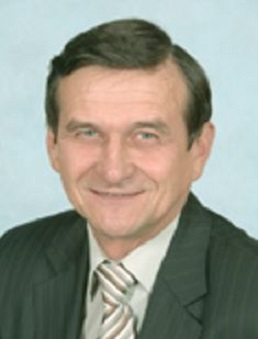

5. Виталий Яковлевич Шаханов
Родился 2 июля 1948 года в Мурманской области, русский.
После службы в Советской Армии в 1969 году поступил в Ленинградский санитарно-гигиенический
медицинский институт, по окончании которого был направлен в Домодедовское производственное объединение
Гражданской авиации. Именно тут в 1978 г. он начал свой профессиональный путь с санитарного врача в аэропорту.
В 1998 году назначен на должность управляющего директора Аэровокзального комплекса "Домодедово".
Под руководством Виталия Яковлевича осуществлена реконструкция здания и площадей, произведено полное технологическое переоснащение аэровокзального комплекса.
При его непосредственном участии внедрена технология, позволяющая оперативно взаимодействовать с государственными службами - пограничной, таможенной, ЛОВД, ФСБ,
миграционным контролем, консульскими службами. до Управляющего директора ЗАО
"Аэровокзальный комплекс "Домодедово"
Удостоен звания "Отличник здравоохранения СССР", награжден нагрудными знаками
"Отличник Аэрофлота", "Почетный работник транспорта России"; кандидат в мастера спорта по лыжам и легкой атлетике;
член Совета Общественной палаты городского округа Домодедово.
https://www.aviaport.ru/digest/2017/04/07/434813.html, https://viperson.ru/people/shahanov-vitaliy-yakovlevich, https://kventz-livejournal-com.turbopages.org/kventz.livejournal.com/s/191407.html